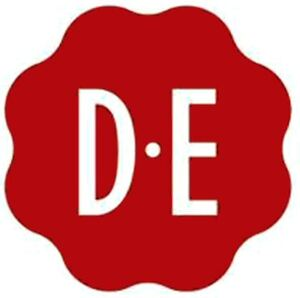

Trade Mark Journal No.2025/041 10 October 2025
WO0000001204364 (7,11,21,29,30,43)
Office of origin: Benelux Office for Intellectual Property (BOIP)
Date of International Registration:12 March 2014
Date of designation in the UK:
12 September 2025

The mark contains the colours white and red Pantone 7621.
- Class 7
- Vending machines for beverages or food; temperature-controlled beverage dispensing units in the nature of vending machines; electric coffee grinders.
- Class 11
- Temperature-controlled beverage and food dispensing units, other than vending machines; electric tea and coffee makers.
- Class 21
- Coffee and tea cups; cups of paper or plastic; mugs; double wall cups; coffee and tea drinking glasses; tea services (tableware); coffee services (tableware); cream and sugar sets; serving trays; coffee grinders, hand-operated; non-electric coffee makers; non-electric coffee pots; non-electric coffee filters; coffee filters, not of paper, being part of non-electric coffee makers; holders for coffee filters; tea infusers; tea strainers; tea pots; non-electric tea kettles; non-electric tea makers; coffee, tea and sugar containers; insulating flasks; flasks; drip catchers not made of paper.
- Class 29
- Milk and milk products; milk beverages, milk predominating; milk powder; creamers for beverages.
- Class 30
- Coffee; coffee in filter packing; coffee capsules; portioned coffee; instant coffee; coffee-based beverages; coffee substitutes; coffee extracts; coffee essences; coffee flavourings; tea; instant tea; tea-based beverages; tea substitutes; tea extracts; tea essences; tea flavourings; iced tea; herbal infusions, other than for medicinal use; infusions consisting of tea, herbs, fruits, spices or flavourings or a combination of these products, other than for medicinal use; cocoa; cocoa-based beverages; chocolate-based beverages; chocolate and chocolate extracts in powder, granulated and liquid form; sugar; honey; natural sweeteners; biscuits; cookies; cakes; pastry; confectionery; edible ices; ice.
- Class 43
- Food and drink catering; serving of food and drinks in restaurants and bars; coffee and tea bar services; office catering services for the provision of coffee, tea and non-alcoholic beverages.
Koninklijke Douwe Egberts B.V.
Representative: Brandstock Legal Rechtsanwaltsgesellschaft mbH, Möhlstr. 2, 81675 Munich, GERMANY